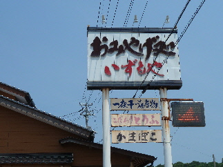
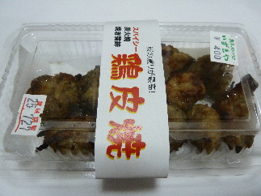
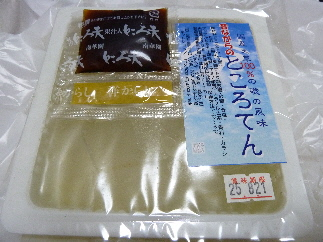
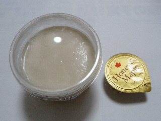

いずもやさんで美味しいものを見つけました。
2013/07/21
なにか美味しいものがないかなーと「いずもや」さんに寄りました。

お店の前で、鶏皮焼の実演販売していたので試食しました。
「これは美味しい！」って買いました。

鶏皮の中にカマボコが入っているんですが、めちゃくちゃやわらかい鶏肉を食べてる感じでがしました。
これ考えた人偉い！って思いました。よくできた商品です。

このところてんも試食がありました。
これも美味しかったので買って帰りました。賞味期限が長いのでもっと買ってもよかったかな？
出雲屋蒲鉾店の豆乳ゼリー
2011/07/24
豆乳プリンではなく、豆乳ゼリーです。
ゼリーにかけるソースは、メープルと黒蜜とブルーベリーの中から選ぶシステムで、私はメープルをチョイスしました。

プリンじゃなくてゼリーなので、豆乳らしいすっきりした味ですね。味自体そんなに強くないので、甘いソースとよく合って美味しいお菓子になっていました。
体にもちょっと良さそうな気分です。
カマボコ屋さんですが、ドライブインのようなお店ですトイレもあるし、お土産もあるし、軽食ありました。